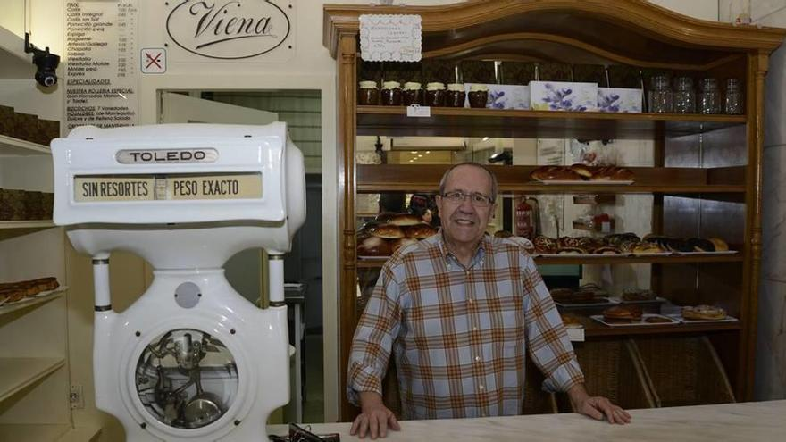

La Historia de La Crofería: Un Legado de Sabor Desde 1980
En el año 1980, en una encantadora esquina de la ciudad, Marcelo y Gabriela, dos almas creativas y apasionadas,
dieron vida a un sueño compartido: La Crofería. El modesto local que eligieron como el hogar de su visión era un rincón lleno de encanto,
con ladrillos a la vista y mesas de madera que emanaban un aire nostálgico. Inspirados por la rica tradición de la pastelería francesa,
se propusieron crear algo más que una panadería; aspiraban a erigir un santuario donde los croissants no solo fueran horneados,
sino elevados a la categoría de arte. Con determinación y pasión, estos dos amantes de la cocina comenzaron a escribir las
primeras páginas de la historia de La Crofería, marcando el inicio de un viaje culinario extraordinario.

Marcelo (1981)
Los Inicios:
Marcelo, un experimentado panadero con un amor especial por la pastelería francesa, y Gabriela, una creativa chef con un don para la innovación,
se conocieron en una pequeña panadería donde ambos trabajaban.
Compartían la misma visión de crear algo único en su comunidad: un lugar donde la tradición se fusionara con la creatividad.
Fue así como, con determinación y sueños en los ojos, decidieron embarcarse en la aventura de La Crofería.
El modesto local que eligieron para su empresa recién nacida respiraba el encanto de una época pasada.
Los ladrillos a la vista y las mesas de madera daban al lugar un aire acogedor y nostálgico.
Marcelo y Gabriela se lanzaron de lleno a la tarea de traer a la vida la auténtica magia de los croissants franceses.
Un Legado de Sabor Desde 1980
Con el tiempo, La Crofería se convirtió en un lugar de encuentro para los amantes de la pastelería.
La pareja creativa no se conformó con la excelencia alcanzada; en cambio, buscó constantemente formas de innovar y sorprender a sus clientes.
Introdujeron nuevas variedades de croissants, desde los clásicos de almendra hasta los atrevidos con rellenos de frutas exóticas.
Cada croissant era una nueva aventura gustativa, y La Crofería se consolidó como un referente en la escena gastronómica local.
Con el éxito, llegaron las expansiones. Marcelo y Gabriela abrieron nuevas sucursales de La Crofería en diferentes vecindarios,
llevando consigo la esencia única que los caracterizaba. A pesar de crecer en tamaño, La Crofería mantuvo su compromiso con la calidad artesanal y
la atención personalizada, conservando el encanto de la panadería original
A medida que los años pasaron, La Crofería se convirtió en una institución querida en la comunidad.
Las generaciones se sucedieron, pero la calidad intransigente y la pasión por la pastelería se mantuvieron intactas.
La familia de Marcelo y Gabriela creció, incluyendo a sus hijos, quienes heredaron el amor por la cocina y la dedicación a La Crofería.
Hoy en día, La Crofería es más que una confitería; es un legado.
La comunidad sigue acudiendo para disfrutar de croissants que son testimonios de la tradición,
la creatividad y el amor que han sido transmitidos a lo largo de los años. Cada rincón de La Crofería cuenta la historia de dos emprendedores que,
con una visión y una paleta de sabores única, crearon un destino culinario que perdura en el tiempo.